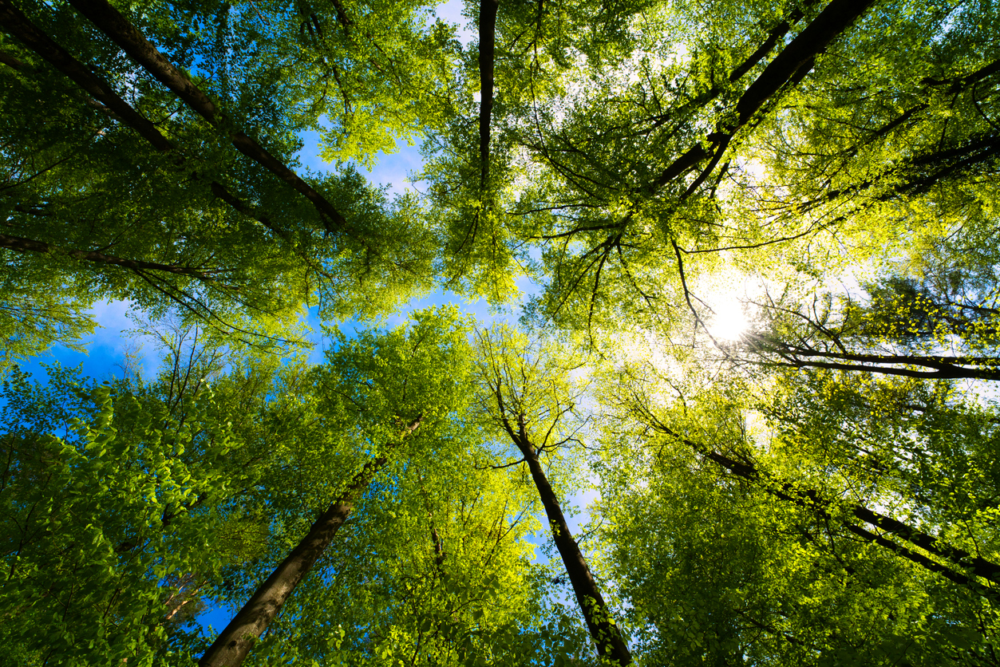

A természet és környezetvédelem főbb területei
Az emberi tevékenységek, különösen a fosszilis tüzelőanyagok elégetése, üvegházhatású gázokat bocsátanak a légkörbe, amelyek felmelegítik a Földet. A klímaváltozás hatásai közé tartozik a szélsőséges időjárási jelenségek fokozódása, a tengerszint-emelkedés, valamint a különböző ökoszisztémák elpusztulása. A globális felmelegedés következtében olvadnak a sarki jégsapkák, savasodnak az óceánok, és nő az aszályok gyakorisága, amelyek mind közvetlen hatással vannak az emberi életminőségre.
A fajok sokfélesége alapvető az ökoszisztémák működéséhez. Az erdőirtás, a vadászat, a mezőgazdasági terjeszkedés és a szennyezés mind veszélyeztetik a természetes élőhelyeket, így egyes fajok kipusztulásához vezethetnek. A biodiverzitás csökkenése nem csupán ökológiai veszteség, hanem komoly gazdasági és társadalmi következményekkel is járhat, hiszen sok növény- és állatfaj fontos szerepet tölt be például az élelmiszerláncban vagy a gyógyszeriparban.
A túlzott mértékű fogyasztás és a műanyaghulladékok felhalmozódása súlyos problémát jelent. A hulladékcsökkentés és az újrahasznosítás elősegítése kulcsfontosságú a fenntartható jövő érdekében. A műanyag szennyezés különösen az óceánokat érinti, ahol mikroműanyagok formájában kerül be az élővilágba, sőt, végső soron az emberi szervezetbe is. A körforgásos gazdaságra való áttérés, ahol a termékek újrahasználata és anyagaik újrafelhasználása prioritást élvez, segíthet ezen problémák enyhítésében.
A tiszta vízhez való hozzáférés alapvető emberi jog. Az édesvízkészletek csökkenése, a vízszennyezés és a vízforrások túlhasználata mind problémákat okoznak, amelyek hatással vannak az egészséges életmódra és az élelmiszertermelésre. Egyes térségekben a vízhiány társadalmi konfliktusokat is kiválthat, és növelheti a migrációs nyomást. Ezért különösen fontos a vízgazdálkodás fejlesztése és a víztakarékos technológiák bevezetése.
A fosszilis tüzelőanyagok helyett a napenergia, szélenergia és egyéb megújuló források alkalmazása elengedhetetlen a klímaváltozás mérsékléséhez. A megújuló energiaforrások használatának terjedése csökkenti a szén-dioxid-kibocsátást és javítja a környezeti fenntarthatóságot. Emellett új munkahelyeket is teremt a zöldgazdaságban, elősegítve egy fenntarthatóbb társadalmi és gazdasági fejlődést. A közösségi energiatermelés, például napelemekkel ellátott lakóépületek vagy szélerőművek közös használata, egyre elterjedtebb megoldás a helyi közösségek körében.
A környezetvédelem egyik fontos, gyakran alábecsült aspektusa az oktatás és szemléletformálás. Már fiatal korban meg kell ismertetni a diákokat a környezetbarát életmóddal, a természet értékeivel és a felelős fogyasztással. A tudatos vásárlás, a helyi termékek előnyben részesítése, az energia- és víztakarékosság mind olyan lépések, amelyekkel egyénileg is hozzájárulhatunk bolygónk védelméhez. A természet szeretete és védelme hosszú távon csak akkor válik társadalmi normává, ha már az oktatás során hangsúlyt kap.
